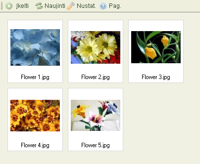
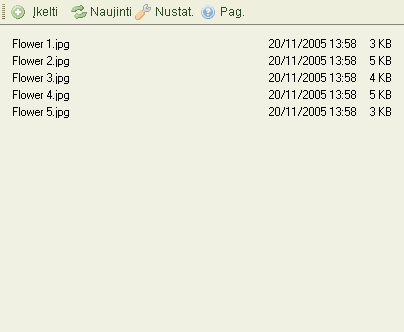

Failus peržiūrėti galima dviem skirtingais būdais, priklausomai nuo CKFinder nustatymų (žiūrėti "Nustatymus"). Žemiau yra parodyti skirtumai tarp "Miniatiūrų" "Sąrašų"vaizdavimo tame pačiame segtuve:


Tam, kad pasirinktumėte failą, padarytumėte jį "aktyviu" CKFinder'yje, tiesiog spustelėkite ant jo. Kas kart užvedus pelytę ant failo, jis nusidažo kita spalva. Pasirinktas failas nusidažo kita spalva, kuri dažniausiai būna mėlyna.
Išplėstinės operacijos yra pasiekiamos per "Kontekstinį meniu ". Galimi šie pasirinkimai:
Dėmesio: Kai kurie kontekstinio meniu mygtukai gali būti išjungti, priklausomai nuo CKFinder nustatymų.
Failui pasirinkti, nuspauskite mygtuką "Pasirinkti"
Failo peržiūrai naršyklėje, spustelėkite "Peržiūrėti" mygtuką. Ne visų rūšių failai gali būti matomi naršyklėse, tačiau ši galimybė yra labai patogi paveiksliukams, tekstui ir PDF failams. Kituose atvejuose, naršyklė paprašys Jūsų atverti failą su tam tikra programa.
Failui atsisiųsti, spustelėkite "Atsisiųsti mygtuką. Naršyklė paprašys Jūsų pasirinkti vietą į kurią išsaugoti atsiųstą failą į kompiuterį.
Failui pervadinti, tiesiog nuspauskite "Pervadinti" mygtuką kontekstiniame meniu. Dialogo lentelė, kurioje bus failo pavadinimas, atsiras, klausianti naujo pavadinimo. Tiesiog įrašykite ir patvirtinkite.
Ne visi simboliai gali būti naudojami pavadinimuose, dėl tam tikrų apribojimų kurie yra
sistemose kuriose paleistas CKFinder. Pvz.: šie simboliai negali būti naudojami papkėse
ir failų pavadinimuose:
\ / : * ? " < > |
Dėmesio: pervadindami failus, nuorodos į juos, esančios kituose puslapiuose, bus pažeistos todėl failai buvę tame segtuve bus nepasiekiami iš išorinių, prieš tai nustatytų nuorodų. Todėl, atsakingai naudokitės šia funkcija.
Failui ištrinti, spauskite "Ištrinti" mygtuką kontekstiniame meniu. Patvirtinimo pranešimas atsiras, tam, kad būtų patvirtinta operacija.
Dėmesio: ištrynus failus, nuorodos į juos, esančios kituose puslapiuose, bus pažeistos todėl failai buvę tame segtuve bus nepasiekiami iš išorinių, prieš tai nustatytų nuorodų. Todėl, atsakingai naudokitės šia funkcija.